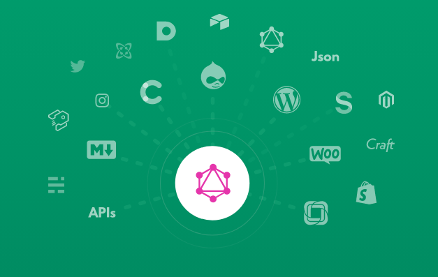
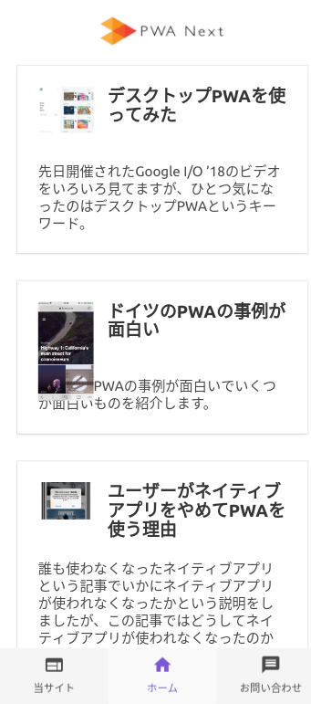

Takeshi Amano
PWA night vol.6
2019-07-17
広島出身
カナダの大学卒業
Gengoの初期メンバー
PayPalのエンジニア
ウクライナのパートナーとオフショア開発
いろんなデータソースに繋がる
VueJSベース
追加設定無しでパフォーマンスアップ
Gatsbyのアーキテクチャを参考

ローカルのGraphQLでデータ取得
1. Pre-rendered HTML 事前に生成されたHTMLファイル
2. Automatic Code Splitting 必要なコードだけロード
3. the PRPL-pattern で最速でページロード
4. Smart link prefetching で次のページのコンテンツを先読み
5. Progressive Images 自動画像最適化とlazy loading
6. Vue.js SPA ページリフレッシュなしの高速ロード
びっくりするくらい簡単
npm install -g gridsome
gridsome create pwanext wordpress
module.exports = {
siteName: 'Gridsome',
siteDescription: 'A WordPress starter for Gridsome',
plugins: [
{
use: '@gridsome/source-wordpress',
options: {
baseUrl: 'https://pwanext.22442244.com', // required
typeName: 'WordPress', // GraphQL schema name (Optional)
perPage: 100, // How many posts to load from server per request (Optional)
concurrent: 10, // How many requests to run simultaneously (Optional)
routes: {
post: '/:year/:month/:day/:slug', //adds route for "post" post type (Optional)
post_tag: '/tag/:slug' // adds route for "post_tag" post type (Optional)
}
}
}
]
}
gridsome develop

とにかく簡単にSSRできる
NetlifyやS3などに置ける
VueのUIテンプレートが使える
Instagramとか他のデータソースと組み合わせ可能
コンテンツ更新の度にビルドが必要
まだバージョンが0.6.5とかで絶賛開発中
プラグインがGatsbyに比べて少ない
ダイナミックなサイトには向いてないかも
amano@ikedayama.jp
https://twitter.com/moksahero
https://dev.to/moksahero